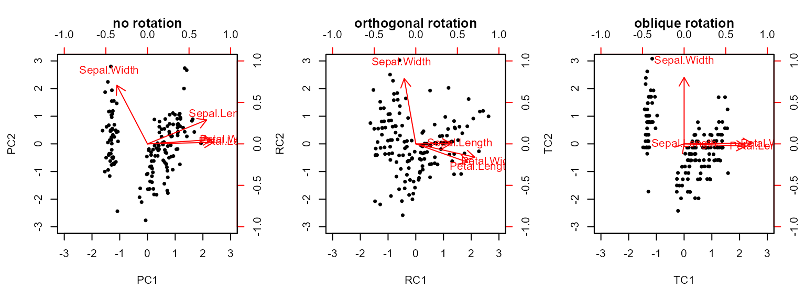

Extending ordr: PCA
new-ord-classes-pca.RmdIntroduction
This is the first of 3 vignettes that detail the process of extending ordr to incorporate new ordination methods. The vignettes may be informative to researchers leveraging geometric data analysis tools (e.g. psychometric researchers), but the extension process we detail is intended for software developers with a mathematical or statistical background. This vignette focuses on principal component analysis, a straightforward singular value decomposition-based technique, while the sequel focuses on factor analysis, a much more complicated case. We demonstrate how to extract key elements from each class based on a shared underlying mathematical theory and to make these available to ordr using a set of methods based on this theory. We also illustrate how unit tests and examples are written to complete the contribution. The final vignette applies both contributions to a common data set to showcase their commonalities and differences. The vignettes are intended for R users with experience in geometric data analysis and with the tidyverse.
If an extension of ordr to a new ordination class is
agreed upon, the first step will be to open an issue that includes the
checklist from this developer vignette:
vignette("extension-checklist").
Warning: package 'ggplot2' was built under R version 4.3.3Principal Component Analysis
Principal component analysis (PCA) is a geometric statistical method by which multivariate data is reduced to fewer dimensions, expending as little variance as possible in the process—that is, the resulting dimensions, called principal axes, contain as much of the variance as possible. The goal is to more easily visualize and interpret patterns in the data. PCA is useful in various fields; this vignette will conclude with an example using psychometric data.
EVD and SVD
PCA can be done by applying either of two matrix decomposition methods to a centered and (often) scaled data matrix .
One method, used by stats::prcomp(), is singular value
decomposition (SVD). Assuming
,
SVD obtains the decomposition
where the column vectors of
and of
have length
and are pairwise perpendicular and
is diagonal. The columns of
are called the left singular vectors of
and those of
the right singular vectors; the diagonal elements of
are the singular values. Based on the equation, elements from
and from
,
respectively, are referred to as “row” and “column” elements.
The other method uses eigenvalue decomposition (EVD), or just
eigendecomposition, as in stats::princomp() and in
psych::principal(). The EVD of a full-rank square matrix
is the unique decomposition
with
diagonal; the entries of
are called the eigenvalues, and the columns of
are called the eigenvectors, of
.
For PCA, we obtain
as the matrix of eigenvectors of
and
as the that of
.
The positive eigenvalues from these two decompositions agree, and their
square roots are the singular values of
.
The fold demonstrates these connections between SVD and EVD.
( pca_psych <- principal(scaled_iris, nfactors = 4, rotate = "none") )Principal Components Analysis
Call: principal(r = scaled_iris, nfactors = 4, rotate = "none")
Standardized loadings (pattern matrix) based upon correlation matrix
PC1 PC2 PC3 PC4 h2 u2 com
Sepal.Length 0.89 0.36 -0.28 -0.04 1 1.1e-16 1.5
Sepal.Width -0.46 0.88 0.09 0.02 1 4.4e-16 1.5
Petal.Length 0.99 0.02 0.05 0.12 1 -4.4e-16 1.0
Petal.Width 0.96 0.06 0.24 -0.08 1 0.0e+00 1.1
PC1 PC2 PC3 PC4
SS loadings 2.92 0.91 0.15 0.02
Proportion Var 0.73 0.23 0.04 0.01
Cumulative Var 0.73 0.96 0.99 1.00
Proportion Explained 0.73 0.23 0.04 0.01
Cumulative Proportion 0.73 0.96 0.99 1.00
Mean item complexity = 1.3
Test of the hypothesis that 4 components are sufficient.
The root mean square of the residuals (RMSR) is 0
with the empirical chi square 0 with prob < NA
Fit based upon off diagonal values = 1Derive EVD from SVD
To understand EVD in terms of SVD, again take . Then when we consider the covariance matrix , we have
Note: we use the orthogonality of to obtain (3) as .
Indeed, the singular values of are the square roots of the eigenvalues of , meaning .
In reference to factor analysis, is often called the loadings matrix—the columns contain the linear coefficients of the measured variables as they load onto each principal component—while contains the scores. Depending on whether the investigator’s focus is on the variables or the cases, they may want to study and visualize the loadings or the scores, respectively. When focusing on the scores, the row data (the cases) may be studied using principal coordinates, the rows of , while the column data (the variables) are left in standard coordinates, the rows of . Here, the inertia of has been conferred onto the left singular vectors, changing the space in which they are being coordinatized. When focusing instead on the variables, the inertia will often be conferred onto the right singular vectors, putting the variables in principal coordinates (the rows of ) and the cases in standard coordinates (the rows of ).
Recovery Methods
By recovery methods or recoverers we mean the functions that retrieve key elements from an ordination object. The essential recoverers extract the components of the decomposition just discussed, while others extract supplementary elements and annotations specific to the technique and its implementation.
While these recovery methods will depend on the GDA technique, the
helper function ordr::as_tbl_ord() reduces redundancy and
expedites debugging, so we give it a method for the
principal class:
as_tbl_ord.principal <- getFromNamespace("as_tbl_ord_default", "ordr")This method draws from the recoverers to produce a
tbl_ord, illustrated below with the pre-loaded set of
Anderson’s iris data:
( tbl_ord <- as_tbl_ord(pca_stats) )# A tbl_ord of class 'prcomp': (150 x 4) x (4 x 4)'
# 4 coordinates: PC1, PC2, ..., PC4
#
# Rows (principal): [ 150 x 4 | 0 ]
PC1 PC2 PC3 ... |
|
[38;5;250m1
[39m -
[31m2
[39m
[31m.
[39m
[31m26
[39m -
[31m0
[39m
[31m.
[39m
[31m478
[39m 0.127 |
[38;5;250m2
[39m -
[31m2
[39m
[31m.
[39m
[31m0
[39m
[31m7
[39m 0.672 0.234 ... |
[38;5;250m3
[39m -
[31m2
[39m
[31m.
[39m
[31m36
[39m 0.341 -
[31m0
[39m
[31m.
[39m
[31m0
[39m
[31m44
[4m1
[24m
[39m |
[38;5;250m4
[39m -
[31m2
[39m
[31m.
[39m
[31m29
[39m 0.595 -
[31m0
[39m
[31m.
[39m
[31m0
[39m
[31m91
[4m0
[24m
[39m |
[38;5;250m5
[39m -
[31m2
[39m
[31m.
[39m
[31m38
[39m -
[31m0
[39m
[31m.
[39m
[31m645
[39m -
[31m0
[39m
[31m.
[39m
[31m0
[39m
[31m15
[4m7
[24m
[39m |
#
# Columns (standard): [ 4 x 4 | 0 ]
PC1 PC2 PC3 ... |
|
[38;5;250m1
[39m 0.521 -
[31m0
[39m
[31m.
[39m
[31m377
[39m 0.720 |
[38;5;250m2
[39m -
[31m0
[39m
[31m.
[39m
[31m269
[39m -
[31m0
[39m
[31m.
[39m
[31m923
[39m -
[31m0
[39m
[31m.
[39m
[31m244
[39m ... |
[38;5;250m3
[39m 0.580 -
[31m0
[39m
[31m.
[39m
[31m0
[39m
[31m24
[4m5
[24m
[39m -
[31m0
[39m
[31m.
[39m
[31m142
[39m |
[38;5;250m4
[39m 0.565 -
[31m0
[39m
[31m.
[39m
[31m0
[39m
[31m66
[4m9
[24m
[39m -
[31m0
[39m
[31m.
[39m
[31m634
[39m | Row and Column Elements
We will begin by defining the following recoverers for a
principal object:
-
ordr::recover_rows()returns , or more generally for some , which factors in from the left. -
ordr::recover_cols()returns or some , which factors into the SVD from the right.
In an SVD , the left and right matrix factors contain coefficients of the row elements and column elements, respectively, of the original data in a new coordinate space. This is why we refer to elements of the left factor (or ) as “row elements” and those of the right factor (or ) as “column elements”. With SVD, both factors are said to contain “active” elements.
An EVD-based method might be based on the row inner products or on the column inner products . Either way, the EVD yields a symmetric factorization ; the “left” and “right” factors are the same. EVD-based PCA uses the latter, a decomposition of the covariance matrix (which happily means that the in this paragraph is the same as that in the last). We therefore interpret the loadings as active column elements, and we write the column recovery method to extract this matrix:
recover_cols.principal <- function(x) {
unclass(x[["loadings"]])
}
recover_cols.principal(pca_psych) PC1 PC2 PC3 PC4
Sepal.Length 0.8901688 0.36082989 -0.27565767 -0.03760602
Sepal.Width -0.4601427 0.88271627 0.09361987 0.01777631
Petal.Length 0.9915552 0.02341519 0.05444699 0.11534978
Petal.Width 0.9649790 0.06399985 0.24298265 -0.07535950We obtain no active row elements from this class, so we write the row recovery method to return a matrix with no rows (elements) but the correct number and names of the columns (artificial coordinates):
recover_rows.principal <- function(x) {
matrix(
nrow = 0, ncol = ncol(x[["loadings"]]),
dimnames = list(NULL, colnames(x[["loadings"]]))
)
}
recover_rows.principal(pca_psych) PC1 PC2 PC3 PC4We do obtain case scores, which are unambiguously row elements; however, they are not obtained through SVD but computed internally. We can still verify that they multiply with the loadings to reconstruct :
Check that scores and loadings reconstruct data
We divide the scores–loadings product elementwise by the data matrix and print the first few rows:
Sepal.Length Sepal.Width Petal.Length Petal.Width
[1,] 1 1 1 1
[2,] 1 1 1 1
[3,] 1 1 1 1
[4,] 1 1 1 1
[5,] 1 1 1 1
[6,] 1 1 1 1We use element-wise division to show equality rather than
all.equal() or identical() because rounding
errors may result in small differences in computation despite
mathematical equivalence. The matrix of all 1s indicates that the
original matrices were equal.
Hence, the scores are supplementary row elements, and we can go ahead
and write a recovery method for them. We must also account for cases
where scores = FALSE is passed, resulting in no
scores element in the principal-class
output.
recover_supp_rows.principal <- function(x) {
if (is.null(x[["scores"]])) {
tibble(numeric(0), nrow = 0, ncol = ncol(x[["loadings"]]))
}
else {
x[["scores"]]
}
}
head(recover_supp_rows.principal(pca_psych)) PC1 PC2 PC3 PC4
[1,] -1.321232 0.5004175 -0.33224592 -0.16735979
[2,] -1.214037 -0.7027698 -0.61036929 -0.71330052
[3,] -1.379296 -0.3564318 0.11499664 -0.19650520
[4,] -1.341465 -0.6227710 0.23750458 0.45672855
[5,] -1.394238 0.6743121 0.04094522 0.24875802
[6,] -1.210927 1.5524358 0.07016197 -0.04576028Inertia and its Conference
The next recoverer obtains the inertia, or variance, along each principal axis:
-
ordr::recover_inertia()returns the eigenvalues of our EVD, or equivalently the squared singular values of our SVD—the diagonal entries of .
From the documentation, psych::principal() returns the
eigenvalues in the values element of the output:
pca_psych$values[1] 2.91849782 0.91403047 0.14675688 0.02071484We can validate these values against those returned using the
recovery method for the prcomp class:
recover_inertia(pca_stats) / pca_psych$values[1] 149 149 149 149Notice that , indicating that these eigenvalues have been scaled by the degrees of freedom. To obtain the inertia, we need then to multiply them by :
recover_inertia.principal <- function(x) {
x[["values"]] * (nrow(x[["scores"]]) - 1L)
}
recover_inertia.principal(pca_psych)[1] 434.856175 136.190540 21.866774 3.086511This method is consistent with that for the prcomp
class.
These values are usually given the names of the artificial coordinates. Because these names are used for several other purposes, they have a separate recovery method:
-
ordr::recover_coord()returns the names of the coordinate axes of our ordination object.
As with the row element recoverers above, we obtain these names from the column names of the loading matrix:
recover_coord.principal <- function(x) {
colnames(x[["loadings"]])
}
recover_coord.principal(pca_psych)[1] "PC1" "PC2" "PC3" "PC4"The inertia is established, but the methods must also account for how it is conferred on the matrix factors ( and above), which brings us to the next recoverer:
-
ordr::recover_conference()indicates how the inertia is distributed to the rows or columns ( or ) in the object. (stats and psych make different choices here.)
Implications of different conferences of inertia
The “conference” governs the geometry of biplots and matters
crucially to their interpretation, but the matrix factors returned by
different techniques may confer it differently. To avoid having to
manipulate the matrix factors during recovery, we use the
recover_conference() method to inform ordr
how this conference is done.
Not distributing the inertia (i.e. not multiplying out the matrix in SVD or EVD) maintains and as matrices of unit vectors. Thus, we say that the cases and variables are in standard coordinates. But when we do distribute the inertia to one or both other matrices in the decomposition, we obtain the cases and/or variables in principal coordinates.
Assuming we desire principal coordinates, EVD-based techniques leave
only the option of conferring inertia onto one matrix of singular
vectors. This depends on the implementation (and how we interpret it),
and in the case of psych::principal() it would be the right
singular vectors. However, the conference of inertia in SVD-based
techniques depends on the user’s motivation. In short, if the user
wishes to maintain the approximate Euclidean distances between data
cases, then conference onto the left singular vectors is ideal. If
instead the user wishes to maintain the approximate correlations between
variables, then conference onto the right singular vectors is ideal.
recover_conference(pca_stats)[1] 1 0The conference recovery method is, so far, always a static vector,
since the methods don’t confer inertia differently based on the input.
Here, we see that stats::prcomp() automatically confers all
inertia onto the left singular vectors (a conference of
,
alternatively, would indicate that a PCA has conferred its inertia onto
the right singular vectors). This means that the scores of
pca_stats are in principal coordinates and the loadings are
in standard coordinates.
This is straightforward for the loadings: We expect from the EVD that
they are in principal coordinates, i.e. that they have full inertia, and
we checked that the loadings matrix agrees with the full-inertia
loadings obtained from stats::prcomp(). So,
.
We also checked that the product
reconstructs
,
which suggests that
.
So, the scores should be in standard coordinates, i.e. they have been
conferred no inertia. Symbolically:
This yields a conference of . A careful check follows.
Check that the loadings matrix has full inertia
# X'X from EVD
cov <- cov(scaled_iris)
evd <- eigen(cov)
# observe loadings matrix equals VD up to sign
( evd$vectors %*% diag(sqrt(evd$values))) / unclass(pca_psych$loadings ) PC1 PC2 PC3 PC4
Sepal.Length 1 -1 -1 -1
Sepal.Width 1 -1 -1 -1
Petal.Length 1 -1 -1 -1
Petal.Width 1 -1 -1 -1Hence we have .
As such, we define the following recovery method:
recover_conference.principal <- function(x) {
c(0, 1)
}
recover_conference.principal(pca_psych)[1] 0 1PCA Followed by Rotation
In factor analysis, the loadings—a transformation of the measured or “manifest” variables into a smaller set of latent variables—will often be composed with a rotation—a change of basis to a new but same-sized set of latent variables—to achieve “simple structure” in which the latent variables are easier to interpret. We’ll discuss this in more detail in the FA vignette. Because PCA has long been appropriated for FA, such rotations may also be applied to the results of PCA, and this functionality is provided by psych.
Rotations may be either orthogonal or oblique. We compute and illustrate both in the next two code chunks, using an oblique rotation provided by GPArotation.
Remark about precision of language
Mathematically, oblique rotations are not proper rotations, which are angle-preserving. Following the FA literature, we refer to both as “rotations” but always qualify those that are oblique.
Fundamental to PCA are the orthogonality of the principal components and the minimality of the residual variance of each principal subspace. Oblique rotations compromise the former, while even orthogonal rotations undermine the latter. For these reasons, it is contested whether PCA with rotation should still be considered PCA. For clarity, we refer to these models as “PCA followed by rotation”.
Warning: package 'GPArotation' was built under R version 4.3.3
( pca_ortho <- principal(scaled_iris, rotate = "varimax", nfactors = 4) )Principal Components Analysis
Call: principal(r = scaled_iris, nfactors = 4, rotate = "varimax")
Standardized loadings (pattern matrix) based upon correlation matrix
RC1 RC3 RC2 RC4 h2 u2 com
Sepal.Length 0.53 0.85 0.00 0.00 1 1.1e-16 1.7
Sepal.Width -0.17 -0.04 0.98 -0.01 1 4.4e-16 1.1
Petal.Length 0.78 0.54 -0.28 0.14 1 -4.4e-16 2.2
Petal.Width 0.89 0.41 -0.20 -0.06 1 0.0e+00 1.5
RC1 RC3 RC2 RC4
SS loadings 1.71 1.18 1.09 0.02
Proportion Var 0.43 0.30 0.27 0.01
Cumulative Var 0.43 0.72 0.99 1.00
Proportion Explained 0.43 0.30 0.27 0.01
Cumulative Proportion 0.43 0.72 0.99 1.00
Mean item complexity = 1.6
Test of the hypothesis that 4 components are sufficient.
The root mean square of the residuals (RMSR) is 0
with the empirical chi square 0 with prob < NA
Fit based upon off diagonal values = 1
( pca_obliq <- principal(scaled_iris, rotate = "oblimin", nfactors = 4) )Warning in GPFoblq(A, Tmat = Tmat, normalize = normalize, eps = eps, maxit =
maxit, : convergence not obtained in GPFoblq. 1000 iterations used.Principal Components Analysis
Call: principal(r = scaled_iris, nfactors = 4, rotate = "oblimin")
Standardized loadings (pattern matrix) based upon correlation matrix
TC1 TC3 TC2 TC4 h2 u2 com
Sepal.Length 0.00 1.00 0.00 -0.01 1 1.1e-16 1.0
Sepal.Width 0.00 0.00 1.00 0.01 1 4.4e-16 1.0
Petal.Length 0.92 0.05 -0.03 0.14 1 -4.4e-16 1.1
Petal.Width 1.02 -0.01 0.01 -0.11 1 0.0e+00 1.0
TC1 TC3 TC2 TC4
SS loadings 1.92 1.04 1.01 0.03
Proportion Var 0.48 0.26 0.25 0.01
Cumulative Var 0.48 0.74 0.99 1.00
Proportion Explained 0.48 0.26 0.25 0.01
Cumulative Proportion 0.48 0.74 0.99 1.00
With component correlations of
TC1 TC3 TC2 TC4
TC1 1.00 0.84 -0.39 0.06
TC3 0.84 1.00 -0.12 0.26
TC2 -0.39 -0.12 1.00 -0.19
TC4 0.06 0.26 -0.19 1.00
Mean item complexity = 1
Test of the hypothesis that 4 components are sufficient.
The root mean square of the residuals (RMSR) is 0
with the empirical chi square 0 with prob < NA
Fit based upon off diagonal values = 1
op <- par(mfrow = c(1, 3))
biplot.psych(pca_psych, choose = c(1, 2), main = "no rotation")
biplot.psych(pca_ortho, choose = c("RC1","RC2"), main = "orthogonal rotation")
biplot.psych(pca_obliq, choose = c("TC1","TC2"), main = "oblique rotation")
par(op)The biplots suggest that the rotations twist the manifest variables (vectors) to better align with the latent variables (axes); in fact, they twist the latent variables to better align with the manifest variables. Because all 4 factors (principal components) were obtained, the rotations are not constrained to two dimensions, and the geometry of the vectors in the 2-dimensional projection warps. However, both rotations preserve the correlations between the manifest variables in the transformed space. (The angles between vectors appear to change dramatically under the oblique rotation, but recall that the rotated principal axes are no longer orthogonal; the biplots do not communicate this and even obscure it.)
Check and interpret rotated loadings
This extended fold examines the linear algebra at play in each rotation. In PCA followed by an orthogonal rotation, the rotated loadings are the original loadings matrix multiplied by the orthogonal rotation matrix :
RC1 RC2 RC3 RC4
Sepal.Length 1 1 -1 1
Sepal.Width 1 1 -1 1
Petal.Length 1 1 -1 1
Petal.Width 1 1 -1 1In the oblique case, we obtain two loading matrices. The first is the
pattern matrix
.
The $loadings element extractable from an
oblique-transformed principal object is the pattern
matrix:
TC1 TC2 TC3 TC4
Sepal.Length 1 1 -1 1
Sepal.Width 1 1 -1 1
Petal.Length 1 1 -1 1
Petal.Width 1 1 -1 1The pattern matrix quantifies how much each principal component loads into each variable.
The second loadings object is the structure matrix . The structure matrix is obtained from the pattern matrix via multiplying by the interfactor correlation matrix .
(pca_obliq$loadings %*% pca_obliq$Phi) /
pca_obliq$Structure TC1 TC3 TC2 TC4
Sepal.Length 1 1 1 1
Sepal.Width 1 1 1 1
Petal.Length 1 1 1 1
Petal.Width 1 1 1 1The structure matrix contains correlations between factors and variables, and it tends to be more stable between samples.
In the orthogonal case,
is the identity matrix, which is why we have just one loadings matrix.
Accordingly, a principal object only contains
$Structure and $Phi elements if it contains an
oblique rotation.
The choice between an orthogonal and oblique rotation depends on our priorities. An orthogonal rotation keeps the model more faithful to the data. But if we want to convey significant correlation in the variables or to more easily interpret a biplot, then an oblique rotation may be more appropriate. Various different rotations suitable for different goals exist within either category.
One way ordr might organize this information would
be to separately recover the unrotated loadings and the rotation matrix.
This would require some transformation, since the principal
class stores the already-rotated loadings, but it might be worth the
trouble to disentangle other aspects of the class and to generalize the
recovery process to more methods. On the other hand, it might be
misguided to recover the rotation matrix as an element, as it would
enable questionable practices like overlaying un-rotated loadings with
scores based on the rotated loadings. For now, ordr
recovers elements for the rotated model:
recover_cols.principal(pca_obliq) TC1 TC3 TC2 TC4
Sepal.Length 0.001135748 1.00104339 0.00135006 -0.007037052
Sepal.Width 0.000138637 0.00150469 1.00121836 0.005252757
Petal.Length 0.921306788 0.05149774 -0.03318141 0.143665190
Petal.Width 1.016481008 -0.01298686 0.01299764 -0.105507227
recover_cols.principal(pca_ortho) RC1 RC3 RC2 RC4
Sepal.Length 0.5307647 0.84749442 0.00480238 -0.004354515
Sepal.Width -0.1734876 -0.03569366 0.98415576 -0.008089084
Petal.Length 0.7806361 0.54202999 -0.27690180 0.141902059
Petal.Width 0.8878262 0.40995148 -0.20111456 -0.057072742Either way, the methods must be informed by the additional caution and checks above.
Augmentation
We have recovered all of the ordr-relevant geometric
data from the principal object. What remains are any pieces
of information in the class that annotate the matrix factors:
-
ordr::recover_aug_rows()andordr::recover_aug_cols()do not recover raw elements of the PCA but rather reassemble additional, often non-numeric elements that augment the row and column coordinates.
This information is organized in each case as a tibble, not a matrix. For convenience, we attach the tibble package:
The most important annotations are the names, which will usually have
been taken from the row and column names of the data set
.
But they may also include information specific to these units (cases and
variables for PCA) that was carried over from the data object, e.g. the
Species column from the iris data, or that
governed pre-processing, e.g. the variable means and standard deviations
when variables are scaled before PCA.
The row and column augmentation recoverers must also comport with the active and any supplementary elements recovered by those methods. For example, our row augmentation function must recognize that no active row elements are recovered and that the supplementary elements, if available for recovery, correspond to the cases:
recover_aug_rows.principal <- function(x) {
# no active elements
res <- tibble(.rows = 0L)
# scores as supplementary elements
if (!is.null(x[["scores"]])) {
name <- rownames(x[["scores"]])
res_sup <- if (is.null(name)) {
tibble(.rows = nrow(x[["scores"]]))
} else {
tibble(name = name)
}
} else {
res_sup <- tibble(.rows = 0L)
}
# supplement flag
res$.element <- "active"
res_sup$.element <- "score"
as_tibble(dplyr::bind_rows(res, res_sup))
}Our column augmentation function concerns only active elements. In
addition to the variable names, we augment the column elements with the
means and standard deviations obtained during pre-processing and
included in the principal object:
recover_aug_cols.principal <- function(x) {
name <- rownames(x[["loadings"]])
res <- if (is.null(name)) {
tibble(.rows = nrow(x[["loadings"]]))
} else {
tibble(name = name)
}
res$.element <- "active"
res
}These values are required for some biplot layers like calibrated axes.
Finally, the coordinate augmentation function provides the coordinate
names and their standard deviations, which are provided in the
principal object:
recover_aug_coord.principal <- function(x) {
data.frame(
name = recover_coord.principal(x),
sdev = sqrt(x[["values"]][seq(1, ncol(x[["loadings"]]))])
)
}Check numbers of rows
To preempt bugs, we should ensure that the number of rows in each augmented data frame agree with those of the corresponding extracted matrix.
nrow(recover_aug_rows.principal(pca_psych)) ==
nrow(recover_rows.principal(pca_psych)) +
nrow(recover_supp_rows.principal(pca_psych))[1] TRUE
nrow(recover_aug_cols.principal(pca_psych)) ==
nrow(recover_cols.principal(pca_psych))[1] TRUE
nrow(recover_aug_coord.principal(pca_psych)) ==
length(recover_inertia(pca_psych))[1] TRUEWe have now defined the methods required to obtain the
tbl_ord wrapper for a principal object:
pca_psych |>
as_tbl_ord() |>
augment_ord()# A tbl_ord of class 'psych': (150 x 4) x (4 x 4)'
# 4 coordinates: PC1, PC2, ..., PC4
#
# Rows (standard): [ 150 x 4 | 1 ]
PC1 PC2 PC3 ... | .element
|
[3m
[38;5;246m<chr>
[39m
[23m
[38;5;250m1
[39m -
[31m1
[39m
[31m.
[39m
[31m32
[39m 0.500 -
[31m0
[39m
[31m.
[39m
[31m332
[39m |
[38;5;250m1
[39m score
[38;5;250m2
[39m -
[31m1
[39m
[31m.
[39m
[31m21
[39m -
[31m0
[39m
[31m.
[39m
[31m703
[39m -
[31m0
[39m
[31m.
[39m
[31m610
[39m ... |
[38;5;250m2
[39m score
[38;5;250m3
[39m -
[31m1
[39m
[31m.
[39m
[31m38
[39m -
[31m0
[39m
[31m.
[39m
[31m356
[39m 0.115 |
[38;5;250m3
[39m score
[38;5;250m4
[39m -
[31m1
[39m
[31m.
[39m
[31m34
[39m -
[31m0
[39m
[31m.
[39m
[31m623
[39m 0.238 |
[38;5;250m4
[39m score
[38;5;250m5
[39m -
[31m1
[39m
[31m.
[39m
[31m39
[39m 0.674 0.040
[4m9
[24m |
[38;5;250m5
[39m score
[38;5;246m# ℹ 145 more rows
[39m
#
# Columns (principal): [ 4 x 4 | 2 ]
PC1 PC2 PC3 ... | name .element
|
[3m
[38;5;246m<chr>
[39m
[23m
[3m
[38;5;246m<chr>
[39m
[23m
[38;5;250m1
[39m 0.890 0.361 -
[31m0
[39m
[31m.
[39m
[31m276
[39m |
[38;5;250m1
[39m Sepal.Length active
[38;5;250m2
[39m -
[31m0
[39m
[31m.
[39m
[31m460
[39m 0.883 0.093
[4m6
[24m ... |
[38;5;250m2
[39m Sepal.Width active
[38;5;250m3
[39m 0.992 0.023
[4m4
[24m 0.054
[4m4
[24m |
[38;5;250m3
[39m Petal.Length active
[38;5;250m4
[39m 0.965 0.064
[4m0
[24m 0.243 |
[38;5;250m4
[39m Petal.Width active This can also now be done “under the hood” by
ordinate():
# A tbl_ord of class 'psych': (150 x 4) x (4 x 4)'
# 4 coordinates: PC1, PC2, ..., PC4
#
# Rows (standard): [ 150 x 4 | 1 ]
PC1 PC2 PC3 ... | .element
|
[3m
[38;5;246m<chr>
[39m
[23m
[38;5;250m1
[39m -
[31m1
[39m
[31m.
[39m
[31m32
[39m 0.500 -
[31m0
[39m
[31m.
[39m
[31m332
[39m |
[38;5;250m1
[39m score
[38;5;250m2
[39m -
[31m1
[39m
[31m.
[39m
[31m21
[39m -
[31m0
[39m
[31m.
[39m
[31m703
[39m -
[31m0
[39m
[31m.
[39m
[31m610
[39m ... |
[38;5;250m2
[39m score
[38;5;250m3
[39m -
[31m1
[39m
[31m.
[39m
[31m38
[39m -
[31m0
[39m
[31m.
[39m
[31m356
[39m 0.115 |
[38;5;250m3
[39m score
[38;5;250m4
[39m -
[31m1
[39m
[31m.
[39m
[31m34
[39m -
[31m0
[39m
[31m.
[39m
[31m623
[39m 0.238 |
[38;5;250m4
[39m score
[38;5;250m5
[39m -
[31m1
[39m
[31m.
[39m
[31m39
[39m 0.674 0.040
[4m9
[24m |
[38;5;250m5
[39m score
[38;5;246m# ℹ 145 more rows
[39m
#
# Columns (principal): [ 4 x 4 | 2 ]
PC1 PC2 PC3 ... | name .element
|
[3m
[38;5;246m<chr>
[39m
[23m
[3m
[38;5;246m<chr>
[39m
[23m
[38;5;250m1
[39m 0.890 0.361 -
[31m0
[39m
[31m.
[39m
[31m276
[39m |
[38;5;250m1
[39m Sepal.Length active
[38;5;250m2
[39m -
[31m0
[39m
[31m.
[39m
[31m460
[39m 0.883 0.093
[4m6
[24m ... |
[38;5;250m2
[39m Sepal.Width active
[38;5;250m3
[39m 0.992 0.023
[4m4
[24m 0.054
[4m4
[24m |
[38;5;250m3
[39m Petal.Length active
[38;5;250m4
[39m 0.965 0.064
[4m0
[24m 0.243 |
[38;5;250m4
[39m Petal.Width active Package Infrastructure
With the recovery methods written and checked, we round out our contribution with unit tests, examples, and written documentation.
Unit Tests
First, we draw from our lessons above to write a script of unit tests
for these recoverers. We locate the script in
tests/testthat/ and name it following the pattern
test-<package>-<class>.r. To demonstrate that
our methods pass the tests, we attach the testthat
package:
Warning: package 'testthat' was built under R version 4.3.3
Attaching package: 'testthat'The following object is masked from 'package:psych':
describeWe write the following tests, which will only be run if psych is installed:
skip_if_not_installed("psych")
fit_principal <- psych::principal(iris[, -5], nfactors = 4, rotate = "none")
test_that("'principal' accessors have consistent dimensions", {
expect_equal(ncol(get_rows(fit_principal)), ncol(get_cols(fit_principal)))
expect_equal(ncol(get_rows(fit_principal)),
length(recover_inertia(fit_principal)))
})
[32mTest passed
[39m 🥇
test_that("'principal' has specified distribution of inertia", {
expect_type(recover_conference(fit_principal), "double")
expect_vector(recover_conference(fit_principal), size = 2L)
})
[32mTest passed
[39m 🎊
test_that("'principal' augmentations are consistent with '.element' column", {
expect_equal(".element" %in% names(recover_aug_rows(fit_principal)),
".element" %in% names(recover_aug_cols(fit_principal)))
})
[32mTest passed
[39m 🌈
test_that("`as_tbl_ord()` coerces 'principal' objects", {
expect_true(valid_tbl_ord(as_tbl_ord(fit_principal)))
})
[32mTest passed
[39m 🎊Examples
We next adapt an examples script from those for other methods, but
reflecting some of the special cases we encountered above. The file name
ex-methods-psych-principal-iris.r follows a similar
convention but with the illustrative data set specified (allowing for
more than one script if helpful), and the script also begins by
conditioning itself on psych being installed:
if (require(psych)) {# {psych}
# data frame of Anderson iris species measurements
class(iris)
head(iris)
# compute unscaled row-principal components of scaled measurements
iris[, -5] |>
psych::principal(nfactors = 4, rotate = "none") |>
as_tbl_ord() |>
print() -> iris_pca
# compute varimax-rotated row-principal components of scaled measurements
iris[, -5] |>
psych::principal(nfactors = 4, rotate = "varimax") |>
as_tbl_ord() |>
print() -> iris_pca_varimax
# recover observation principal coordinates
head(get_rows(iris_pca))
# recover rotated loadings
get_cols(iris_pca_varimax)
# augment measurement coordinates with names and scaling parameters
( iris_pca <- augment_ord(iris_pca) )
( iris_pca_varimax <- augment_ord(iris_pca_varimax) )
}# {psych}Documentation
Finally, we collect and document the recoverers in a file named
methods-psych-principal.r, following the pattern
methods-<package>-<class>.r:
#' @title Functionality for principal components analysis ('principal') objects
#'
#' @description These methods extract data from, and attribute new data to,
#' objects of class `"principal"` as returned by [psych::principal()].
#'
#'@details
#'
#' <truncated>
#'
#' @name methods-principal
#' @author John Gracey
#' @template param-methods
#' @template return-methods
#' @family methods for eigen-decomposition-based techniques
#' @family models from the psych package
#' @example inst/examples/ex-methods-psych-principal-iris.R
NULLThe remainder of the file defines each recovery method, in each case
preceded by tags that anchor it to the manual entry
methods-principal and export it to the user. Note that the
roxygen2 tag @family cross-links this
entry with related entries (EVD-powered and from the same package),
while the tag @example calls the installed example script
to include its code in the “Examples” section of the entry.
Submission
The function devtools::check() is useful for verifying
that the contribution will not generate errors or warnings, many of
which won’t show up when experimenting with code on the command line or
an IDE like RStudio. It also first runs
devtools::document() to “roxygenize” the documentation into
an entry stored in the man/ folder and incorporated into
the package manual. Once the extension has been formatted and checked,
the last steps are to edit DESCRIPTION accordingly, to
write an entry in NEWS.md and to submit a pull request
following the guidelines of CONTRIBUTING.md.